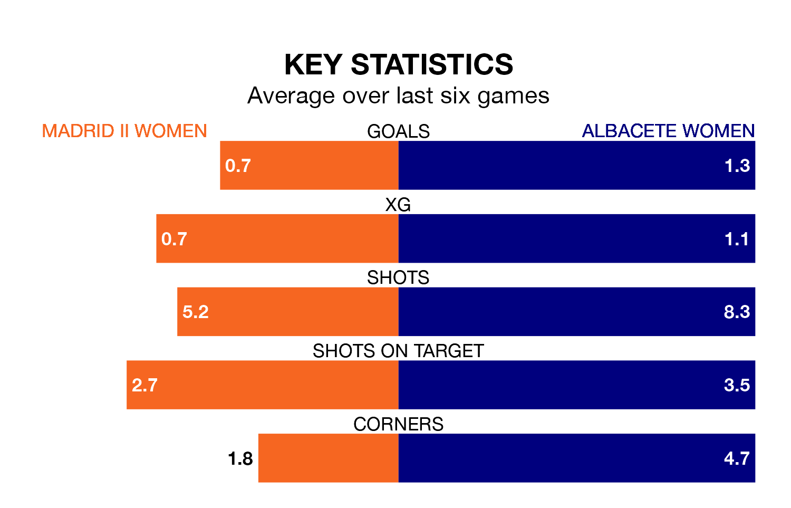

Albacete Women make the journey to play Madrid II Women on early Sunday looking to pick up points to end their three-game losing streak.
Albacete's struggles have left them with seven points from their last six Primera Federación Femenina matches, while their opponents have earned three from a possible 18.
Madrid II are bottom of the table after 24 games, of which they have won three and drawn two, earning 11 points.
Albacete are five places ahead of the hosts in ninth, with eight wins and seven draws putting them on 31 points.
With 16 goals in 24 games so far this season, Madrid II are the league's lowest scorers with 0.7 goals per game. And they are conceding more than average, letting in 51 goals at a rate of 2.1 per game.
The away team, meanwhile, are average scorers, with 1.2 goals per game. They have conceded 1.4 goals per game.
Madrid II's last match was on April 13, a 5-0 loss against Espanyol Women.
Albacete lost 5-1 against Osasuna Women last time out, on April 14.
Updated: 11:31 (UTC), 15/04/24